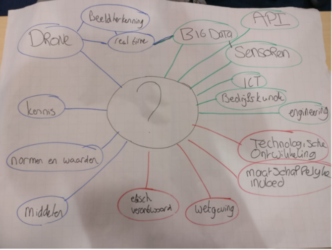
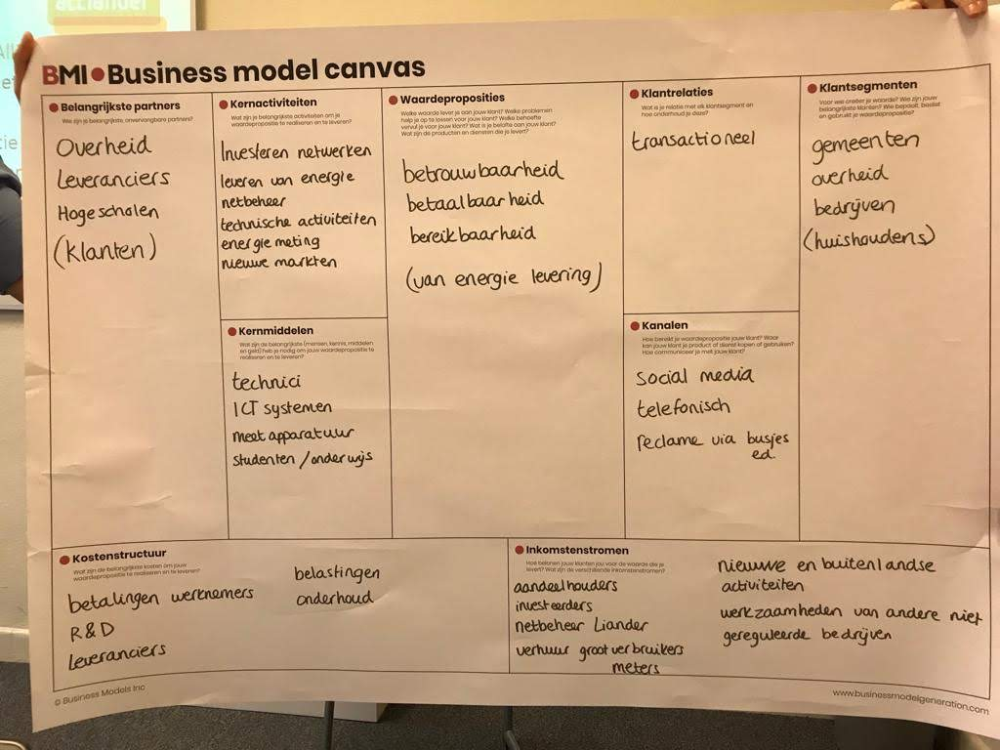
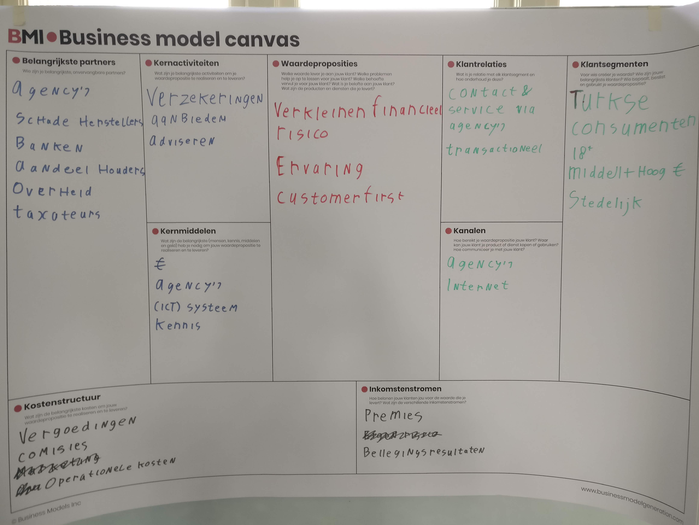
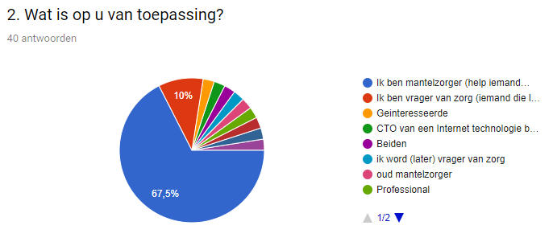
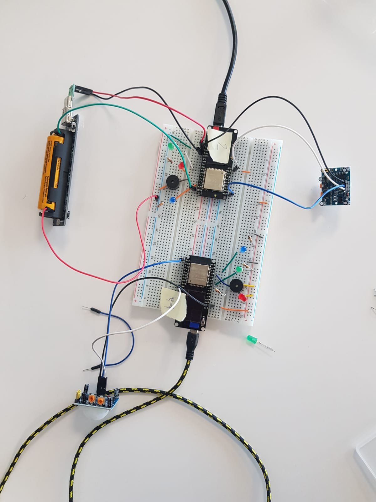
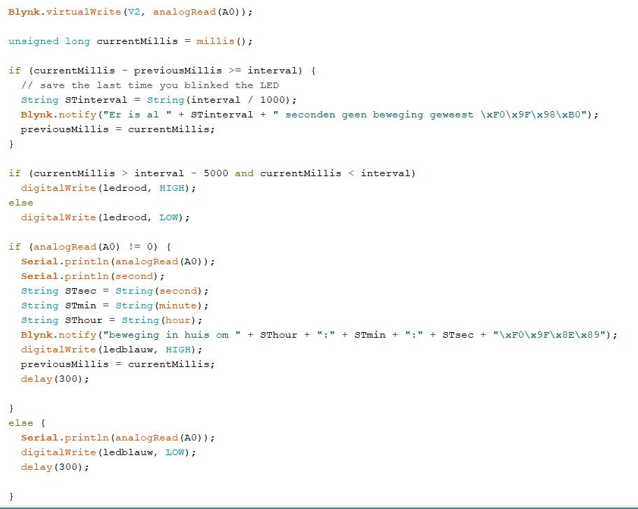
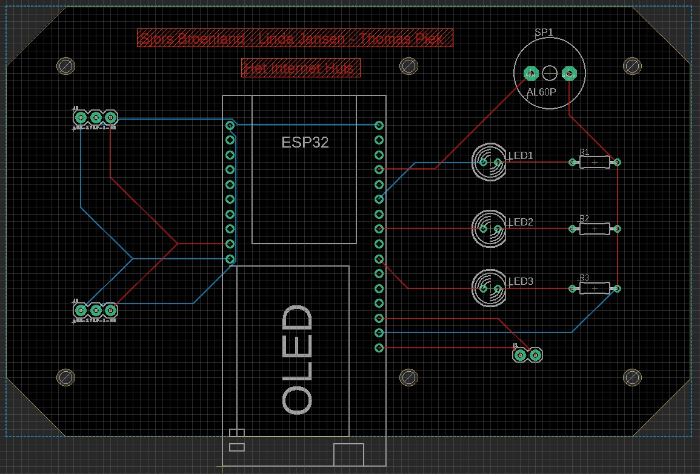
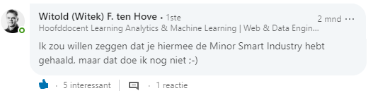

Ik ben een student bedrijfskunde die momenteel de minor Smart Industry volgt. In mijn vrije tijd vind ik het leuk om te (salsa)dansen en te fitnessen. Ik lees het Financieele Dagblad en vind ik het leuk om op de hoogte te blijven van technologische ontwikkelingen.
Klik op mijn LinkedIn profiel om recente activiteiten weer te geven.
In het kader van Smart Start heb ik geleerd te analyseren, communiceren en mijzelf professioneel te ontwikkelen. Dit heb ik op verschillende wijzen gedaan. Onderstaand kun je lezen hoe ik dit heb aangepakt.
Herkennen, analyseren en diagnosticeren
Tijdens de Minor heb ik geleerd hoe ik een Smart Industry bedrijf kan herkennen. Het beste kun je dit doen met onderstaande afbeelding. Hier staan alle trends en ontwikkelingen duidelijk weergegeven.
Zelf heb ik een project gedaan bij Het Internet Huis.
Het Internet Huis valt met name onder Smart Products en Network Centric. Het is een Connectiviteit R&D bedrijf dat op aanvraag van een klant een Smart Connection/IoT oplossing bedenkt. In het project heb ik samen met Sjors Broenland en Linda Jansen
een Proof of Concept (prototype) gemaakt van een IoT oplossing om senioren en mantelzorgers te helpen. Het project was daarmee een Smart Industry project.
Communiceren
Door mijn bevindingen van de Minor op deze site te zetten communiceer ik op een toegankelijke wijze met mijn netwerk. Zo kunnen (potentiële) werkgevers, opdrachtgevers, partners of andere personen zien wat ik in het verleden gedaan heb. Een website is een creatieve manier om een netwerk te bereiken. In tegenstelling tot een dik rapport valt het op en is het erg toegankelijk. Dit maakt het erg effectief.
Professionaliseren
In de Minor Smart Industry heb ik veel technische kennis opgedaan en mij ontwikkeld op het gebied van projectmanagement. Ik kan nu beter dan voorheen een project uitvoeren en heb een basis gelegd (of kennis uitgebreid) voor kennis op het gebied van Artificial Intelligence, Blockchain, IoT, big data, programmeren en Robotica. Als persoon ben ik initiatiefrijker geworden door buiten de minor om extra kennis op te doen. Ik ben naar een Bootcamp Robitca en kennissessies geweest. Zo ben ik niet afhankelijk van wat anderen mij leren stel ik mijn eigen leertraject op.
Daarbuiten heb ik ook iniatief genomen om een workshop Machine Learning neer te zetten zodat ik kan leren om een algoritme te bouwen. Je kunt meer over mijn ontwikkeling vinden onder het kopje Growth bij mijn portfolio.
Tijdens de minor heb ik veel geleerd over technologieën die je kan toepassen om processen efficiënter te maken. Zo heb ik een ESP32 (kleine computer) geprogrammeerd, met sensoren gewerkt en zelf prototypes ontworpen. Hier onder meer daar over.
Bij Smart Business heb ik geleerd bedrijfsprocessen op een slimme manier te innoveren. Tijdens de minor heb ik voor meerdere bedrijven onderzocht en geadviseerd over mogelijkheden om een proces efficiënter in te richten.
Innoveren en ontwerpen
Tijdens de minor hebben we samengewerkt met verschillende bedrijven om vanuit hun case aan oplossingen te werken. Zo hebben we bijvoorbeeld voor Alliander gekeken hoe hun omgeving er uit ziet en wat voor trends kunnen helpen bij de bedrijfsvoering.

Ook hebben we een Business Model Canvas gemaakt. Hierin wordt duidelijk geschetst hoe de belangrijkste componenten van de organisatie samenvallen.

Uiteindelijk is over verschillende cases gebrainstormd en bleek dat fotoherkenning met behulp van Artificial intelligence veel toegevoegde waarde kan leveren aan de organisatie. Hier is dan ook een groep binnen een project verder mee gaan werken.
Ook hebben we met een AXA (turkse verzekeraar) aan tafel gezeten. Eerst hebben we een Business Model Canvas gemaakt om de organisatie te schetsen.

Daarna zijn we gaan kijken naar mogelijkheden om in te spelen op technische ontwikkelingen. Zo zijn we op het idee gekomen om in auto’s een OBD sensor te plaatsen. In een pilot versie heeft dit voor 20% minder schades gezorgd. Wanneer AXA dit zou invoeren zal het elk jaar 13,6% van de investering terugkrijgen. Dat betekent dat AXA al na 7 jaar en 4,5 maand de investering terug heeft verdient. Dit zorgde ervoor dat AXA erg enthousiast werd over het idee en verder zou gaan kijken naar mogelijkheden.
Bij bovenstaande cases heb ik in een team samen nagedacht over het toepassen van technische ontwikkeling bij organisaties. Zo heb ik bedrijfsprocessen volgens Smart Industry criteria ontworpen. Dit kan voor andere werkwijzen zorgen waardoor een businessmodel veranderd. Voorbeeld: doordat een verzekeraar 20% aan schades bespaart is het minder afhankelijk van anderen inkomstenstromen zoals beleggingsresultaten. Overigens komt hier ook een maatschappelijk perspectief bij kijken. Het verminderen van schade is een grote winst voor de maatschappij op sociaal (minder ongelukken) en financieel gebied.
Onderzoeken
In het geval van AXA is samen met een groep onderzoek gedaan naar technische mogelijkheden via het internet. Wanneer deze inzichtelijk waren is een keuze gemaakt van welke toepassing het meest geschikt is voor AXA. In dit geval was het een OBD adapter voor in auto’s. Er is daarna onderzoek gedaan naar kosten en baten om zo een financieel plaatje op te kunnen stellen. Door dit onderzoek wordt een casus vertaalt naar mogelijkheden in de praktijk en dat is erg waardevol. Door onderzoek kun je verantwoorden hoe iets naar waarschijnlijkheid in de praktijk gaat gebeuren.
Communiceren
De bevindingen deelden we meestal direct met de bedrijven waarover de case ging. Ook zijn de bevindingen voor een groep gepresenteerd. Dit zorgt ervoor dat iedereen kan meedenken. Dit heeft als gevolg dat je kritiek kan krijgen vanuit meerdere perspectieven wat bijdraagt aan de kwaliteit van een onderzoek/advies.

Met het project bij Het Internet Huis
heb ik kennis over IoT en prototyping opgedaan. Samen met Sjors Broenland en Linda Jansen
hebben we een prototype gemaakt van een IoT schakeling die senioren en mantelzorgers helpt zodat senioren langer thuis kunnen blijven wonen. Het prototype bestaat uit een ESP32, sensoren, een script, een printplaat en een behuizing.
Innoveren en ontwerpen
Tijdens het project heb ik in een projectgroep gewerkt aan een prototype van een IoT oplossing. We hebben eerst de behoefte van senioren en mantelzorgers (doelgroep) gemeten en zijn daarna een prototype gaan ontwerpen.
Het prototype is uiteindelijk gerealiseerd door een ESP32 met sensoren aan een app te koppelen. Deze zorgt via een script ervoor dat automatisch meldingen gestuurd worden. Voor het prototype hebben we een PCB en 3D-geprinte behuizing ontworpen. De PCB hebben we in China besteld en de 3D-geprinte behuizing hebben we in Arnhem geprint.
Dit IoT prototype heb ik uiteindelijk gepresenteerd op de eindseminar. Hier kon de rest van de omgeving komen kijken hoe het in de praktijk werkt.
projectmanagement
Tijdens het project heb ik vanuit verschillende rollen bijgedragen aan het succes van het projectteam.
Projectleider
Er was geen officiële projectleider in ons team, iedereen heeft deze rol soms opgepakt. Ik heb de rol opgepakt door de planning en scope te waarborgen, te inventariseren wat er nog moet en kan gebeuren, soms taken te verdelen en door te communiceren met stakeholders.
Ontwikkelaar
Als ontwikkelaar heb ik meegedacht over welke sensoren nodig zijn,

heb ik code ontwikkeld,

een PCB ontworpen

en een 3D behuizing ontworpen.

Tester
Ontwerpen en testen gaan hand in hand. Wanneer iets gemaakt was (door mij of een ander) werd dit getest. Zo kom je er achter of iets doet wat je wilt. Dit lijkt vanzelfsprekend maar is het niet altijd. Zo hadden we een keer een sensor op een pin van de ESP32 aangesloten die altijd HIGH/1 gaf. De intentie was om HIGH/1 te meten. Het lijkt dan alsof het gelukt is wanneer de ESP dit signaal geeft maar dat is niet zo. Je moet altijd testen of iets het doet maar ook of iets het niet doet. Als een sensor maar een staat heeft heb je er vrij weinig aan. Hierdoor leer ik minder op aannames af te gaan en meer op uitgebreide metingen.
Onderzoeken
Om te weten wat de doelgroep graag wilde hebben zijn we eerst op onderzoek gegaan naar bestaande bronnen. Hierbij bleek dat er al inzichtelijk was welke middelen de doelgroep gebruikt maar nog niet perse waar behoefte aan is. Om achter de behoefte te komen is een enquête uitgezet en hebben we met experts gesproken. Uit de resultaten bleek duidelijk dat er behoefte was om te weten wanneer een persoon een bepaalde tijd wel/niet in een kamer is geweest. Daarom hebben we er voor gekozen om gebruik te maken van een bewegingssensor in onze IoT schakeling.
Communiceren
Toen de resultaten binnen waren hebben we deze gecommuniceerd met onze opdrachtgever. Ook hebben we de resultaten met onze leveranciers van data gedeeld. Dit waren onder andere zorgverzekeraars, een belangen organisatie en het Zlimhuis in Doetinchem. Meestal was dit op een zakelijke manier via mail.
Samenwerken
Binnen het team verliep het project soepel. We konden goed samenwerken en vulden elkaar aan. Aan het begin was ik een beetje sceptisch over het te behalen eindresultaat omdat we met drie bedrijfskundigen aan het project werkten. Het leek mij een lastige opgave zonder technische kennis het project te laten slagen. Maar door een goede samenwerking en een strakke planning hebben we ons eindresultaat op tijd kunnen realiseren. Zo blijkt maar dat alles mogelijk is zolang je maar de wil hebt om te slagen.
Tijdens de minor heb ik niet alleen meer kennis opgedaan maar ben ik ook als persoon gegroeid. Hetgeen waar ik het meest trots op ben is dat ik als enthousiast en gedreven student wordt gezien. Zo heb ik Witek ten Hove
al halverwege de Minor (bijna) weten overtuigen dat ik de competenties van een Smart Industry student heb.

Initiatief nemen
Buiten het standaardprogramma van de Minor heb ik op verschillende wijzen actief aan mijn professionele ontwikkeling gewerkt.
Bootcamp & Purple Nectar
Tijdens de Bootcamp Robotica
van Het Ministerie van Defensie In samenwerking met Knooppunt Techniek
heb ik binnen drie dagen in groepsverband een prototype van een bergingsvoertuig gemaakt. Hierbij heb ik veel geleerd over robotica, Het Ministerie van Defensie als organisatie, projectmanagement en samenwerken in een multidisciplinair team (drie bedrijfskundigen, twee IT studenten en twee mechatronica studenten). Als aansluiting op de bootcamp heb ik ook Purple NECtar bezocht. Hier heb ik onze creatie gepresenteerd en tentoongesteld voor grote groepen mensen, waaronder een generaal en andere invloedrijke personen
Kennissessies
Er zijn meerdere interessante kennissessies geweest die ik heb bijgewoond. Zo ben ik naar Covadis
geweest om te leren over Artificial Intelligence en Robotica. Ook ben ik naar een Tweakers Meet-up over Quantum- en Nanotechnologie geweest.
Door dit soort events wordt ik intrinsiek gemotiveerd om met dergelijke onderwerpen aan de slag te gaan. Dit is erg belangrijk om mijzelf te ontwikkelen.
Een netwerk opbouwen
Tijdens de minor heb ik mijn netwerk op de hoogte gehouden van wat ik aan het doen ben door een stripverhaal op LinkedIn te plaatsen.
Overige ontwikkeling
Verder ontwikkel ik mij door kleinere maar zeker niet onbelangrijke acties. Zo heb ik aan Witek ten Hove gevraagd of hij een workshop wil geven waarin we zelf een Artificial Intelligence/Machine Learning algoritme bouwen. Dit heb ik gevraagd omdat ik al wist hoe AI werkt en wat de mogelijkheden zijn maar heb ik zelf nog nooit een algoritme gebouwd. Ik was erg nieuwsgierig naar het ontwikkelproces.
Verder kijk ik vaak op Reddit over ontwikkelingen op het gebied van Cryptocurrency/Blockchain, AI, robotica en andere technologische onderwerpen.